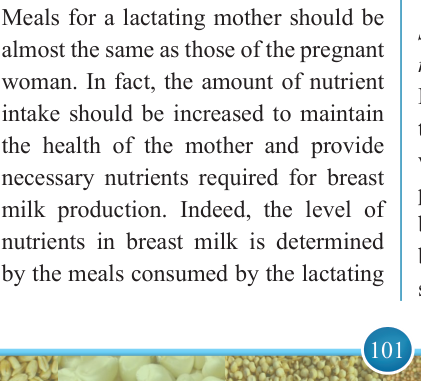
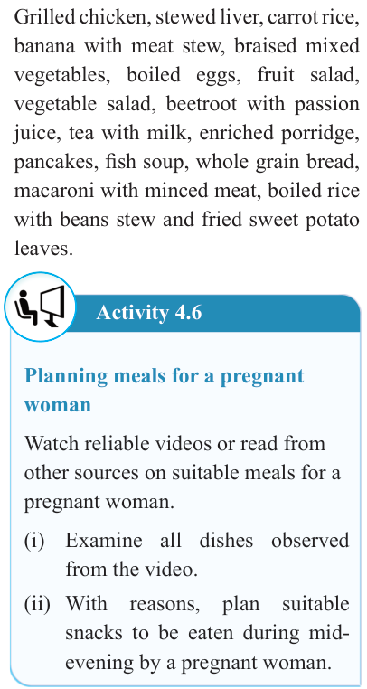

101


Food and Human Nutrition

Form Two

Suggested suitable dishes for a pregnant woman
Grilled chicken, stewed liver, carrot rice, banana with meat stew, braised mixed vegetables, boiled eggs, fruit salad, vegetable salad, beetroot with passion juice, tea with milk, enriched porridge, pancakes, fish soup, whole grain bread, macaroni with minced meat, boiled rice with beans stew and fried sweet potato leaves.
Activity 4.6
Planning meals for a pregnant woman
Watch reliable videos or read from other sources on suitable meals for a pregnant woman.
(i) Examine all dishes observed from the video.
(ii) With reasons, plan suitable snacks to be eaten during mid- evening by a pregnant woman.
Meals for a lactating mother
Meals for a lactating mother should be almost the same as those of the pregnant woman. In fact, the amount of nutrient intake should be increased to maintain the health of the mother and provide necessary nutrients required for breast milk production. Indeed, the level of nutrients in breast milk is determined by the meals consumed by the lactating
mother. Consider the following points when planning meals for a lactating mother.
(i) The meal must provide a greater significant amount of calories, protein, vitamins A, B12, folate,
C, D, and E, calcium, magnesium, zinc and phosphorus.
(ii) The meal should be diversified and balanced to provide all essential nutrients for facilitating optimal levels of nutrients in milk.
(iii) Extra fluids should be provided to maintain an adequate milk supply because the breast milk is composed of 90% water. Fluids such as fruit juices, milk and soup can serve this purpose.
(iv) Avoid the use of strong flavours.
Some strong flavoured spices such as garlic or chilli may alter the taste of breast milk and can sometimes cause gas discomfort to babies.
(v) Do not include alcoholic beverages in meals to protect the baby, who can ingest alcohol through breast milk.
Suggested suitable dishes for lactating mother
Mixed fruit juice, mixed vegetable soup, tea with milk, banana milk shake, banana with meat stew, boiled fish, stewed potatoes with meat, stewed beans, braised peas, boiled mixed vegetables, banana porridge, milk pudding, fruit salad and mashed potatoes.
17/09/2025 16:30